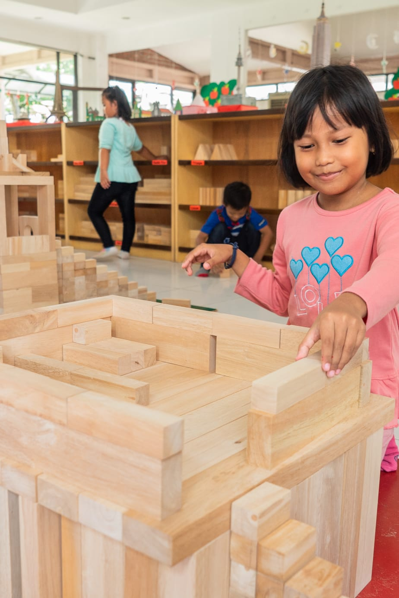
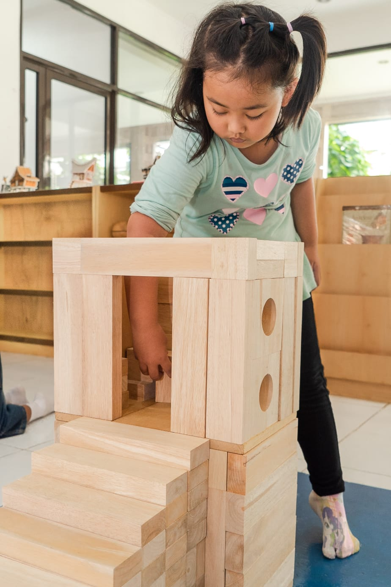
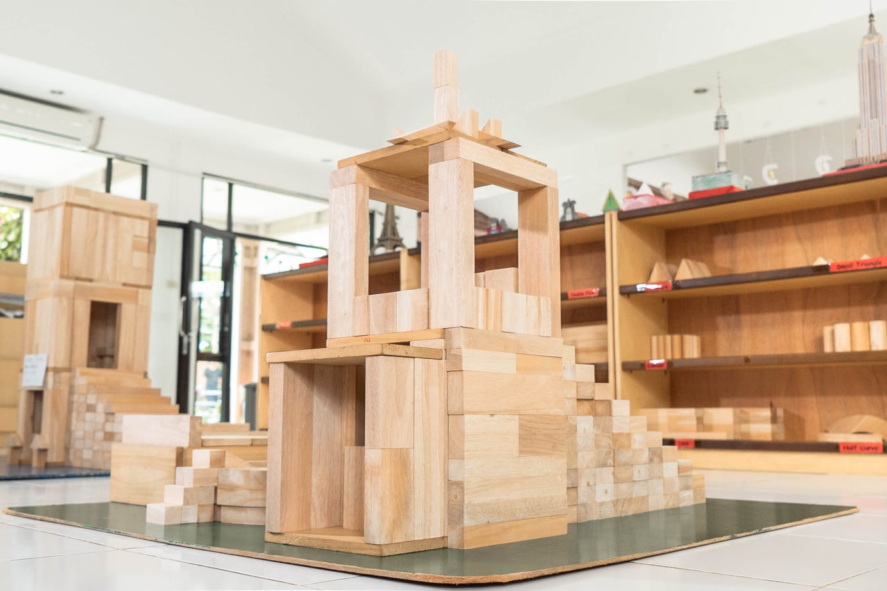

Sentra Balok
Berfokus pada pembangunan struktur berpikir dan pengetahuan anak memakai balok unit dan material lainnya yang mempunyai bentuk yang telah ditetapkan agar anak bisa membangun bangunan tiga dimensi.



